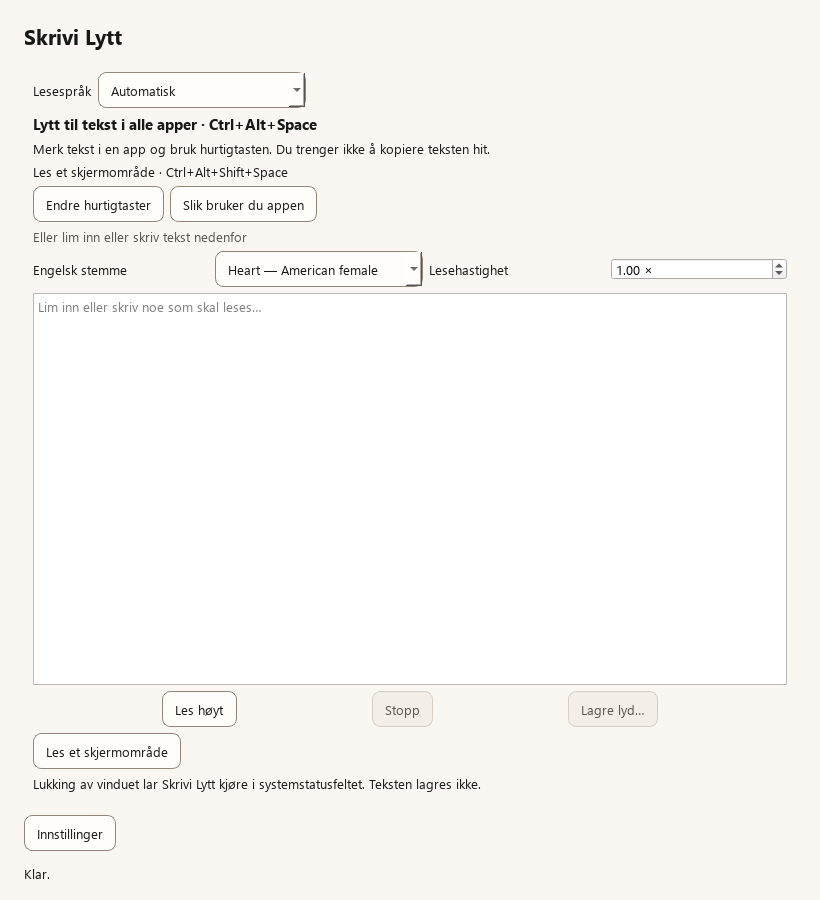

Velg teksten
Marker tekst i appen du bruker, eller lim den inn i Skrivi Lytt.

Få tekst lest høyt på norsk og engelsk. Lokalt på din egen maskin. Gratis å bruke.
Testutgave 0.4.3 · Windows 11 (x64)
En egen app — du trenger ikke Snakk. Etter installasjon heter den «Skrivi Lytt» i Start-menyen.
Slik fungerer det
Marker tekst i appen du bruker, eller lim den inn i Skrivi Lytt.
Trykk Ctrl + Alt + Mellomrom for å lese markert tekst. I leservinduet kan du trykke Ctrl + Enter.
Juster lesehastigheten i appen. Trykk snarveien igjen for å stoppe opplesingen.
Automatisk velger norsk eller engelsk for hele teksten. Du kan også velge språk selv. En norsk bokmålsstemme og engelske stemmer følger med; støtte for nynorsk er ikke bekreftet.

En annen vei inn i teksten
Lytt til en oppgave, følg en tekst eller hør gjennom det du selv har skrevet. Et enkelt supplement når lesing krever ekstra innsats — også for elever med dysleksi.
Lytt leser teksten som finnes. Den lager ikke svar og skriver ikke om innholdet.
Praktisk informasjon
Også tekst i bilder
Hvis markert tekst ikke kan hentes fra en app, lim den inn i leservinduet. For tekst i bilder eller skannede dokumenter: trykk Ctrl + Alt + Shift + Mellomrom og velg et skjermområde. Lokal tekstgjenkjenning (OCR) kan gjøre feil; kontroller teksten.
Skjermområdet behandles på din egen PC. Funksjonen leser teksten den gjenkjenner; den forklarer ikke bilder eller lager et svar.
Kom i gang
Last ned .exe-filen, åpne den og følg installasjonsveiviseren. Lukk Skrivi Lytt først hvis appen allerede kjører. Start deretter appen fra Start-menyen. Du trenger ikke administratorrettigheter eller en egen Python-installasjon.
Utgiver er Open Source Developer Jonathan Wright. Windows kan fortsatt vise en SmartScreen-advarsel. Installer bare hvis du stoler på prosjektet; på en skole-PC bør du følge skolens IT-rutiner. Lytt er ikke tilgjengelig i Microsoft Store ennå.
Installasjonsfilen inkluderer stemmer og motorer. Eksisterende modeller og innstillinger beholdes ved ny installasjon. Oppdateringer installeres manuelt fra GitHub.
Ikke legg ut private elevopplysninger eller sensitive tekster i offentlige tilbakemeldinger.